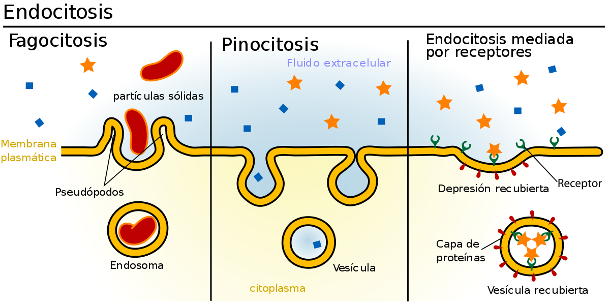

Durante o projeto, iremos abordar os leucócitos, que são células responsáveis por realizar o processo de fagacitose, a endocitose, nome dado ao processo em que os leucócitos fagocitam algumas partículas estranhas e a diapedese, processo que os leucócitos deixam os vasos sanguíneos e partem para os tecidos, que posteriormente serão penetrados. Além disso, apresentaremos a morfologia e a fisiologia dos tipos de leucócitos e relacionarmos a endocitose e a diapedese a atividades de defesa do organismo.
